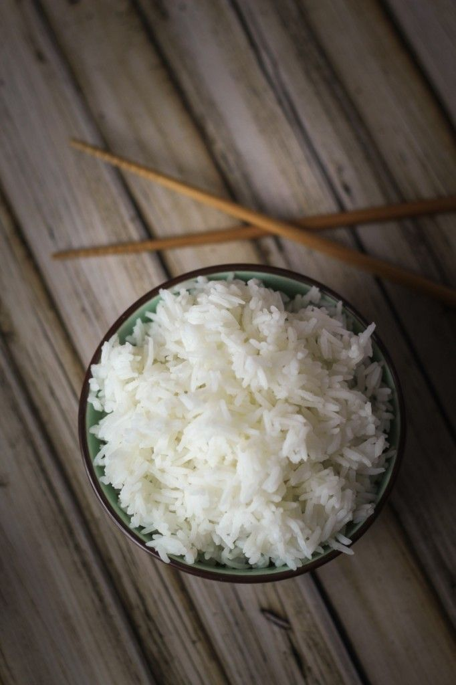

Rice

Ingredients
- Rice
- Salt
- Oil
- Onions
- Water
- Fry some sluced onions in your saucepan for some few minutes
- Pour your rice in and stir for some 2 minutes
- Pour water in it and allow it to cook for 10-15 minutes
- Cover the rice with a napkin under the lid when the water has almost finished in it
- Leave it for an additional 2 minutes on low heat
- Enjoy!!